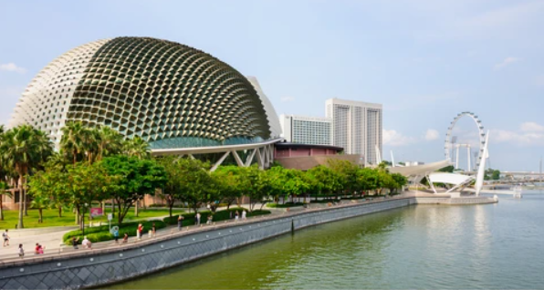

Esplanade Park is one of Singapore’s oldest heritage parks and showcases several historical landmarks. Do not conduct commercial events here as they are not allowed. This 3.5m-tall marble pagoda commemorates Major-General Lim Bo Seng, one of Singapore's many war heroes during World War II.
